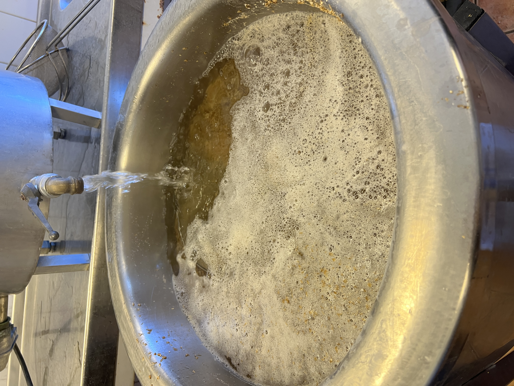
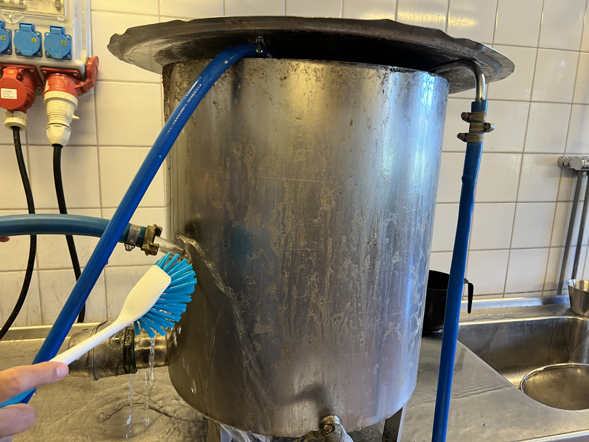
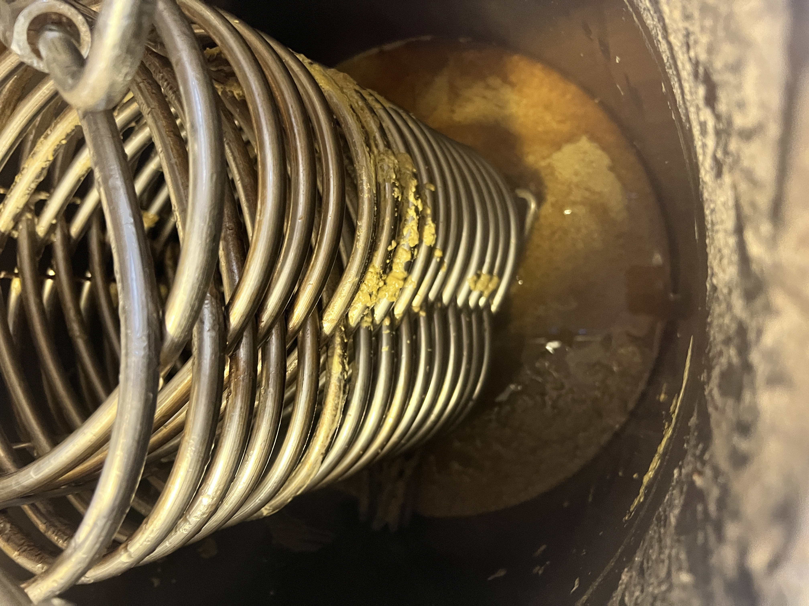

Visuell Instruktionsbok: Lilla bryggverket
Steg-för-steg-guide för ölbryggning vid Lövstaolets Vänner.
1. Förberedelser och krossning
- Värm mäskvatten: Förvärm vatten till 80 °C. När vatten och malt blandas blir målet ca 68 °C.
- Förbered malten: Blanda malten enligt recept (t.ex. Pale Ale, Münchener och karamellmalt).
- Krossning: Starta krossen via luckan med svart vred. Krossningen ska vara grov utan hela korn kvar.

2. Mäskning
- Blanda: Rör i den krossade malten i det uppvärmda vattnet.
- Temperatur: Håll mäskningen runt 66-68 °C under hela steget.
- Tid: Låt mäsken vila enligt recept för att omvandla stärkelse till socker.

3. Lakning
- Cirkulation: Recirkulera vörten tills den blir klar.
- Sköljning: Lakvatten tillsätts försiktigt för att få ut rätt sockermängd.
- Mål: Samla rätt volym vört inför koket.

4. Kok och humle
- Uppkok: Koka vörten enligt receptets koktid.
- Humlegivor: Tillsätt humle vid angivna tider för beska och arom.
- Övervakning: Håll koll på kokintensitet och skumbildning.

5. Kylning och överföring
- Kyl snabbt: Kyl vörten till jästemperatur med kylslinga.
- Flytta vört: Överför till jäskärl på ett rent och lugnt sätt.
- Förbered jäsning: Syresätt och tillsätt jäst enligt recept.
